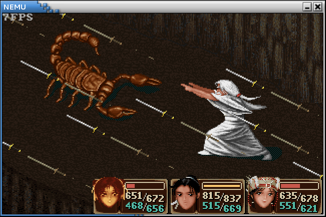
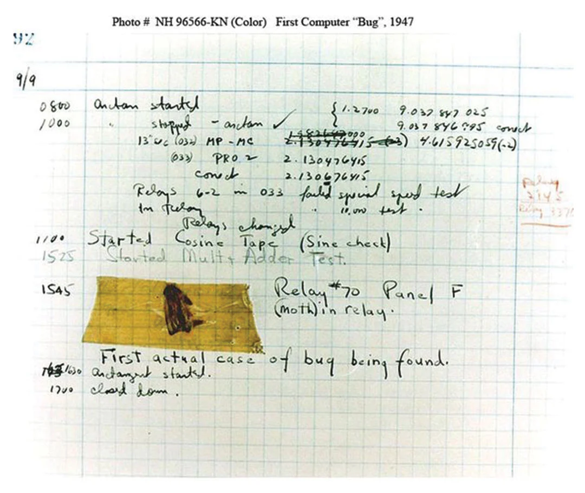
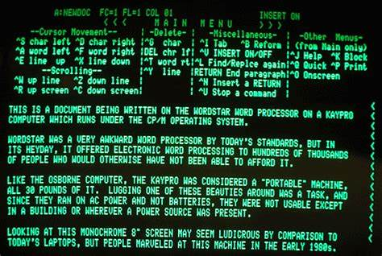

什么是操作系统？
Operating System: A body of software, in fact, that is responsible for making it easy to run programs (even allowing you to seemingly run many at the same time), allowing programs to share memory, enabling programs to interact with devices, and other fun stuff like that. (OSTEP)
很多疑点
- “programs” 就完了？那么多复杂的程序呢！
- “shared memory, interact with devices, ...”？
什么是操作系统？ (cont'd)
“管理软/硬件资源、为程序提供服务” 的程序？

理解操作系统
“精准” 的教科书定义毫无意义 (但作者得被迫去写)
- 定义是 “全部” 的一个极简表达
- 如果只想 “了解”，那可以读一下定义
- 如果想学习操作系统，就必须理解 “全部”
操作系统 “全部” 的 overview：
- 操作系统如何从一开始变成现在这样的？
- 三个重要的线索
- 硬件 (计算机)
- 软件 (程序)
- 操作系统 (管理硬件和软件的软件)
复习：理解计算机硬件 (电路)
前导知识：数字逻辑电路/计算机系统基础
- 一个极简的公理系统 (导线、时钟、逻辑门、触发器)
- 建立在公理体系上的数字系统设计 (包括计算机)
前导课程目标：能根据需求实现数字系统
Logisim Demo
数字电路模拟器
- 基本构件：wire, reg, NAND, NOT, AND, NOR
- 每一个时钟周期
- 先计算 wire 的值
- 在周期结束时把值锁存至 reg
会编程，你就拥有全世界！
- 同样的方式可以模拟任何数字系统 (包括计算机系统)
- 同时还体验了 UNIX 哲学
- Make each program do one thing well
- Expect the output of every program to become the input to another
复习：理解计算机软件 (程序)
前导课程：C 程序设计/计算机系统基础
- 高级语言代码 → 指令序列 → 二进制文件 → 处理器执行
前导课程目标：能将需求实现；掌握工具使用；阅读汇编指令

RVEmu Demo
如果你的指令和设备实现得够完善，就能直接启动 Linux

理解操作系统
本课程讨论
- 操作系统：硬件和软件的中间层
- 对单机 (多处理器) 作出抽象
- 支撑多个程序执行
- 学术界谈论的 “操作系统” 是更广义的 “System”
- 例子：对多台计算机抽象 (分布式系统)
理解操作系统
- 理解硬件 (计算机) 和软件 (程序) 的发展历史
夹在中间的就是操作系统
ENIAC: 1946.2.14
“图灵机” 的数字电路实现
- 执行完一条指令后，可以根据结果跳转到任意一条指令 (用物理线路 “hard-wire”)
- 重编程需要重新接线：Emulator and Programming the ENIAC


1940s 的计算机软件
打印平方数、素数表、计算弹道……
- 解释了《程序设计》教课书上经典习题的来源
- (是时候改一改了)
- 大家还在和真正的 “bugs” 战斗

1940s 的操作系统
没有操作系统。
能把程序放上去就很了不起了
- 程序直接用指令操作硬件
- 不需要画蛇添足的程序来管理它
1950s 的计算机硬件
更快更小的逻辑门 (晶体管)、更大的内存 (磁芯)、丰富的 I/O 设备
- I/O 设备的速度已经严重低于处理器的速度，中断机制出现 (1953)

1950s 的计算机软件
更复杂的通用的数值计算
- 高级语言和 API 诞生 (Fortran, 1957)：一行代码，一张卡片
- 80 行的规范沿用至今 (细节：打印机会印刷本行代码)

1950s 的计算机软件 (cont'd)
Fortran 已经 “足够好用”
- 自然科学、工程机械、军事……对计算机的需求暴涨
C---- THIS PROGRAM READS INPUT FROM THE CARD READER,
C---- 3 INTEGERS IN EACH CARD, CALCULATE AND OUTPUT
C---- THE SUM OF THEM.
100 READ(5,10) I1, I2, I3
10 FORMAT(3I5)
IF (I1.EQ.0 .AND. I2.EQ.0 .AND. I3.EQ.0) GOTO 200
ISUM = I1 + I2 + I3
WRITE(6,20) I1, I2, I3, ISUM
20 FORMAT(7HSUM OF , I5, 2H, , I5, 5H AND , I5,
* 4H IS , I6)
GOTO 100
200 STOP
END
1950s 的操作系统
库函数 + 管理程序排队运行的调度代码。
写程序 (戳纸带)、跑程序都是非常费事的
- 计算机非常贵 ($\$50,000-\$1,000,000$)，一个学校只有一台
- 算力成为一种服务：
多用户轮流共享计算机 ，operator 负责调度
- 操作 (operate) 任务 (jobs) 的系统 (system)
- “批处理系统” = 程序的自动切换 (换卡) + 库函数 API
- Disk Operating Systems (DOS)
- 操作系统中开始出现 “设备”、“文件”、“任务” 等对象和 API
1960s 的计算机硬件
集成电路、总线出现
- 更快的处理器
- 更快、更大的内存；虚拟存储出现
可以同时载入多个程序而不用 “换卡” 了
- 更丰富的 I/O 设备；完善的中断/异常机制

1960s 的计算机软件
更多的高级语言和编译器出现
- COBOL (1960), APL (1962), BASIC (1965)
- Bill Gates 和 Paul Allen 在 1975 年实现了 Altair 8800 上的 BASIC 解释器
计算机科学家们已经在今天难以想象的计算力下开发惊奇的程序

1960s 的操作系统
能载入多个程序到内存且调度它们的管理程序。
为防止程序之间形成干扰，操作系统自然地将共享资源 (如设备) 以 API 形式管理起来
- 有了进程 (process) 的概念
- 进程在执行 I/O 时，可以将 CPU 让给另一个进程
- 在多个地址空间隔离的程序之间
切换 - 虚拟存储使一个程序出 bug 不会 crash 整个系统
- 在多个地址空间隔离的程序之间
操作系统中自然地增加进程管理 API
- 既然可以在程序之间
切换 ，为什么不让它们定时切换 呢？ - Multics (MIT, 1965)：现代分时操作系统诞生
1970s+ 的计算机硬件
集成电路空前发展，个人电脑兴起，“计算机” 已与今日无大异
- CISC 指令集；中断、I/O、异常、MMU、网络
- 个人计算机 (PC 机)、超级计算机……

1970s+ 的计算机软件
PASCAL (1970), C (1972), …
- 今天能办到的，那个时代已经都能办到了——上天入地、图像声音视频、人工智能……
- 个人开发者 (Geek Network) 走上舞台

1970s+ 的操作系统
分时系统走向成熟，UNIX 诞生并走向完善，奠定了现代操作系统的形态。
- 1973: 信号 API、管道 (对象)、grep (应用程序)
- 1983: BSD socket (对象)
- 1984: procfs (对象)……
- UNIX 衍生出的大家族
- 1BSD (1977), GNU (1983), MacOS (1984), AIX (1986), Minix (1987), Windows (1985), Linux 0.01 (1991), Windows NT (1993), Debian (1996), Windows XP (2002), Ubuntu (2004), iOS (2007), Android (2008), Windows 10 (2015), ……
今天的操作系统
通过 “虚拟化” 硬件资源为程序运行提供服务的软件。
空前复杂的系统之一
- 更复杂的处理器和内存
- 非对称多处理器 (ARM big.LITTLE; Intel P/E-cores)
- Non-uniform Memory Access (NUMA)
- 更多的硬件机制 Intel-VT/AMD-V, TrustZone/
SGX, TSX, ...
- 更多的设备和资源
- 网卡、SSD、GPU、FPGA...
- 复杂的应用需求和应用环境
- 服务器、个人电脑、智能手机、手表、手环、IoT/微控制器……
课程内容概述
操作系统：软件硬件之间的桥梁
- 本课程中的软件：多线程 Linux 应用程序
- 本课程中的硬件：现代多处理器系统
(设计/应用视角) 操作系统为应用提供什么服务？
操作系统 = 对象 + API - 课程涉及：POSIX + 部分 Linux 特性
(实现/硬件视角) 如何实现操作系统提供的服务？
操作系统 = C 程序 - 完成初始化后就成为 interrupt/trap/fault handler
- 课程涉及：xv6, 自制迷你操作系统